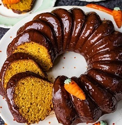

Fácil
Bolo de Chocolate
Um delicioso bolo de chocolate, perfeito para todas as ocasiões.
Tempo: 50 min
Rende: 10 fatias

Fácil
Bolo de Cenoura
Um bolo de cenoura fofinho com cobertura de chocolate.
Tempo: 1h
Rende: 10 fatias
Médio
Bolo de Morango
Um bolo leve, bonito e saboroso, ideal para festas.
Tempo: 1h15 min
Rende: 10 fatias

Fácil
Brigadeiro
Doce Tradicional Brasileiro
Tempo: 30 min
Rende: 15 unidades
Médio
Cookies
Deliciosos cookies de chocolate.
Tempo: 50 min
Rende: 25 unidades
Médio
Pudim de Leite
Um pudim cremoso que derrete na boca.
Tempo: 1h30 min
Rende: 9 fatias